VIEW A / DEVICE SCALE
SCHEMATIC
LIVE / OPTICAL COUPLING Compact tactile vision
Contact,
made visible.
GlowTact turns pressure-induced optical coupling into a direct, high-contrast tactile image using a microtextured clear gel, a black membrane, and single-color illumination.
- INTERFACE
- P2500-molded silicone
- SIGNAL
- Local darkening
- FORM
- Compact fingertips
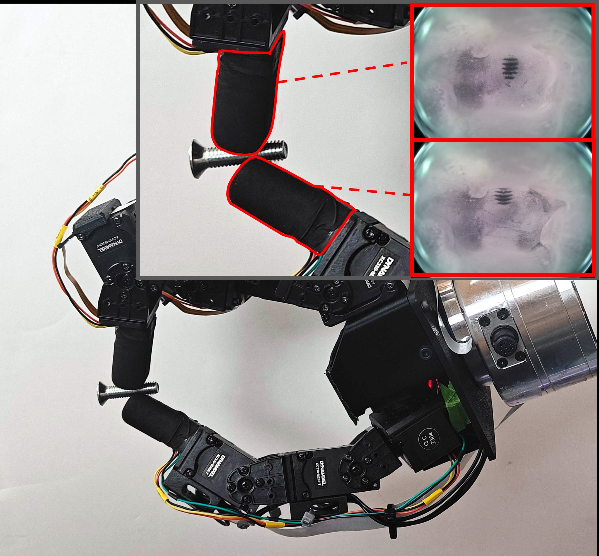
One sensing principle across robotic contact, tactile imaging, and compact fingertip hardware.
SIGNAL CHAMBER ONLINE
QUALITATIVE MECHANISM VIEW
SCROLL TO INSPECT
SYS / 01 Coupling mechanism
How contact
becomes signal.
One pressure control drives the deformation, the air-gap closure, and the camera response.
INDENTER PROBE
VIEW B / MICRO SCALE
Asperity coupling
SECTION / HEIGHT EXAGGERATED
Fixed seed 2500-A
A fixed oblique projection shows contact islands expanding across the P2500-inspired surface.
HEIGHT FIELD / DIMENSIONLESS
Coupled area
VIEW C / SENSOR OUTPUT / DEVICE FOV
SIMULATED
Camera response
SEQUENCE
- 00 Air gap
- 01 Local coupling
- 02 Expanded coupling
STATE 00
An air gap still separates membrane and gel; the camera sees no contact signal.
Qualitative model of the reported P2500 texture and coupling mechanism. Conceptual visualization. Geometry and optical paths are schematic and are not a calibrated mechanical or ray-tracing simulation.
CFG / 01 Sensor forms
One principle.
Three bodies.
The same pressure-induced coupling drives all three. Every result that follows was measured on the flat sensor.
Flat
4 mm XP-565 gel, P2500 mold texture, perimeter illumination.
Omnidirectional
Textured silicone over a clear epoxy skeleton with an LED ring.
Humanoid
Approximately 17 mm wide with front-facing tactile coverage.
DAT Results
Simple optics.
Nothing given up.
Each result below tests the same doubt from a different side: whether a sensor this simple — one colour, no directional illumination, no photometric calibration — gives up what the complicated ones buy. Every measurement is from the flat sensor.
- DAT / 01 Sensitivity
- DAT / 02 3D reconstruction
- DAT / 03 Shear tracking
- DAT / 04 Force prediction
- DAT / 05 Endurance
DAT / 01 Strip it to one colour and it should go numb
It resolves a gram.
It detects contact at about half the force a GelSight Mini needs on the same apparatus, measured across 10 probe geometries at a detection threshold of SNR = 3.
- GlowTact
- 0.12N
- GelSight Mini
- 0.23N
median minimum detectable force
same rig, same protocol
Chart data (271 digitized points)
Redrawn from Fig. 10b. The curves are digitized from the published figure: SNR is measured against the unloaded-frame standard deviation, and those unloaded references are not in the released data, so the values cannot be recomputed from source.
M&M
1.0 g · 9.8 mN
1.0 g · 9.8 mN
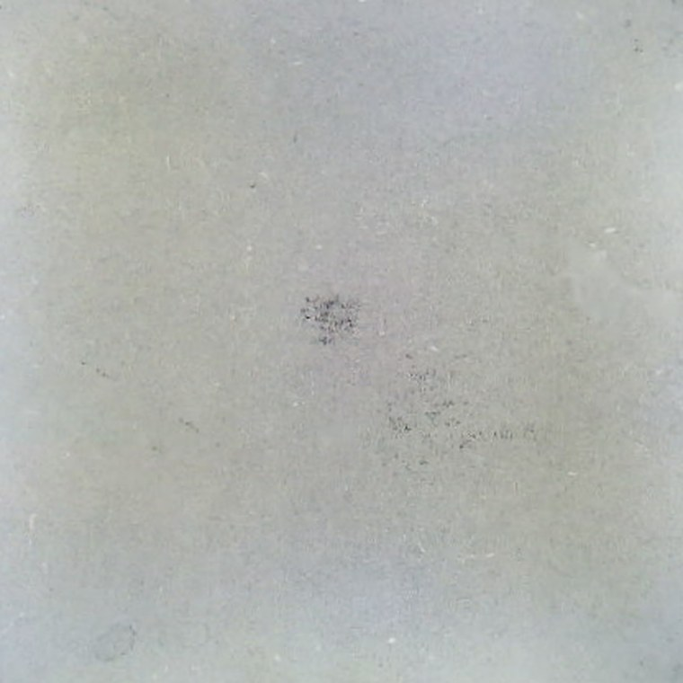
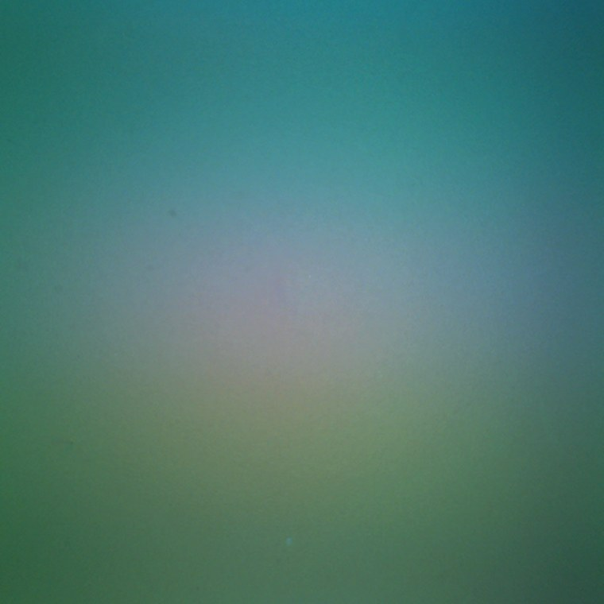
M8 nut
passive placement
passive placement
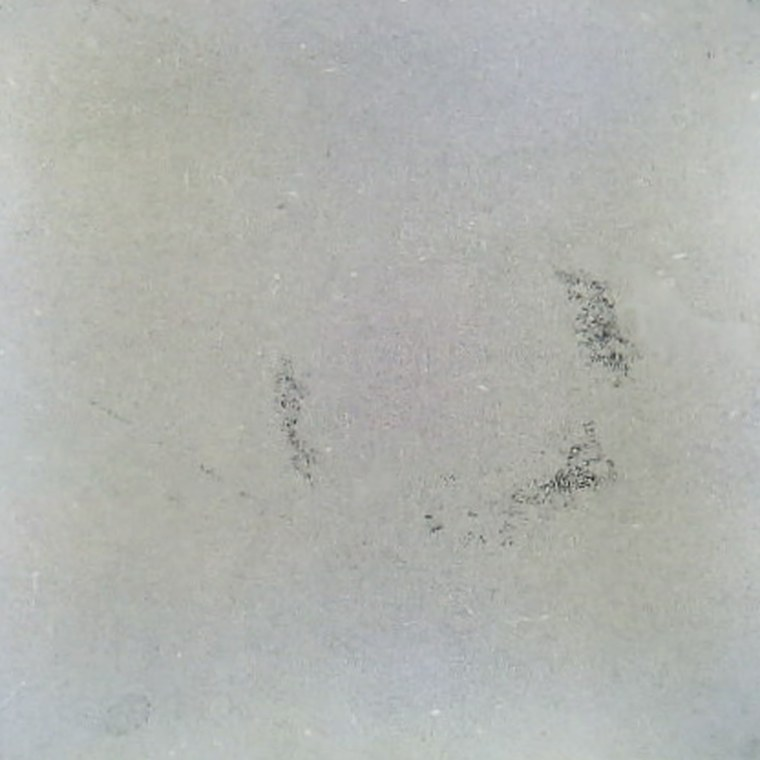
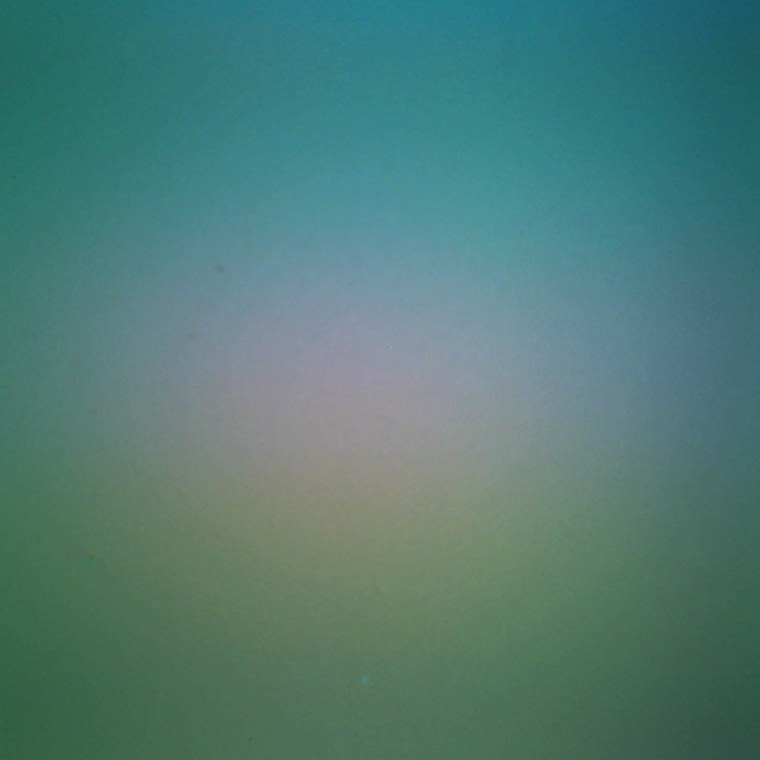
M5 screw
resting on its side
resting on its side
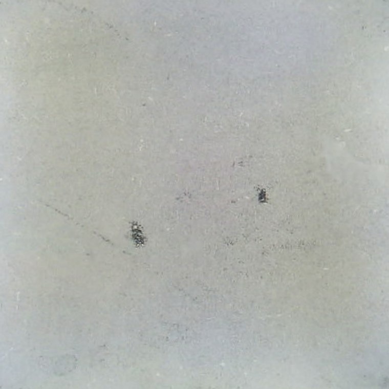
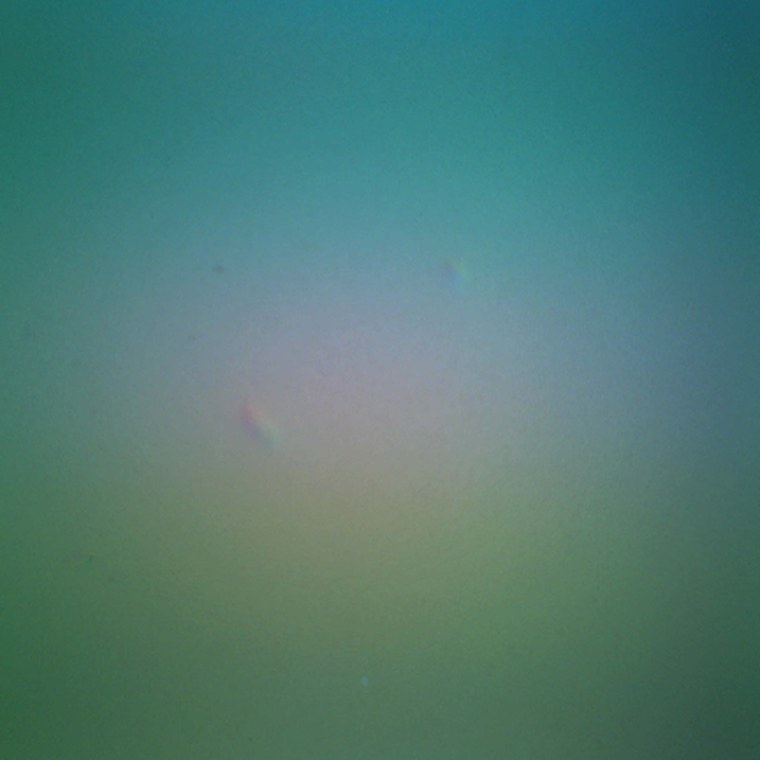
Raw camera output from both sensors — no differencing, no amplification, no contrast stretch, and the same treatment on each side. Each object rests under its own weight with no applied load. The paper’s Fig. 9 pairs the M&M with an M6 nut and an M5×6 screw; the released matched set carries an M8 nut, so that is what is shown, and no mass is claimed for it.
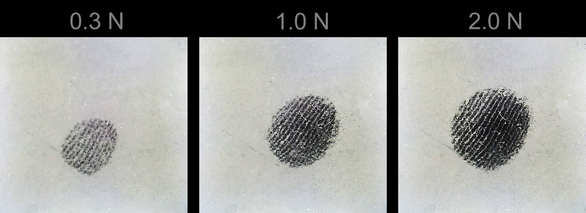
Passive placement is a demonstration, not a calibrated minimum-force measurement. GelSight Mini appears here as a representative geometry-based baseline recorded on the same apparatus and protocol; the comparison is of these two units under these conditions.
DAT / 02 Drop photometric stereo and you lose geometry
One dark image,
turned in three dimensions.
Every surface below is reconstructed from a single GlowTact tactile frame — the darkening alone, with no second view and no marker field. Each object turns through a full revolution so the relief can be read from every angle.
GlowTact was not designed to recover shape — it was designed to visualise pressure. The relief below comes from running 9DTact’s reconstruction pipeline on GlowTact frames, and it resolves M1 threads at 0.25 mm pitch, where 9DTact’s own published results stop at M4 — 0.7 mm.
TURNTABLE
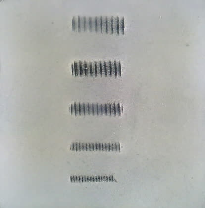
M1–M3 screw threads M3, M2.5, M2, M1.5 and M1 set screws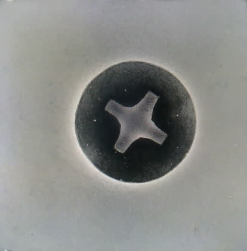
Phillips screw head Cross recess inside a round head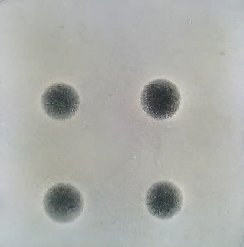
4.7 mm calibration balls Spherical caps at a known radius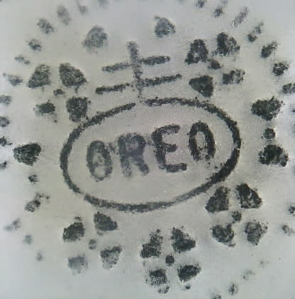
Oreo embossing Raised lettering and floret border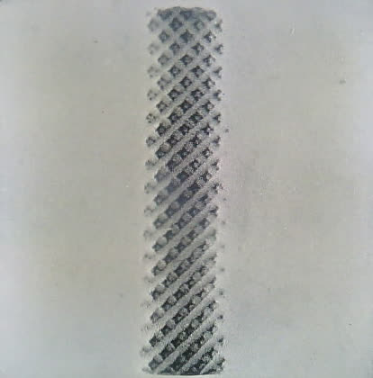
Swirl ridge pattern Repeating ridge band across the pad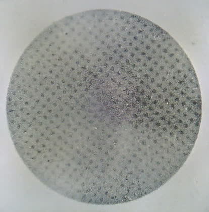
Knurled cell terminal Cross-hatched knurl on a circular face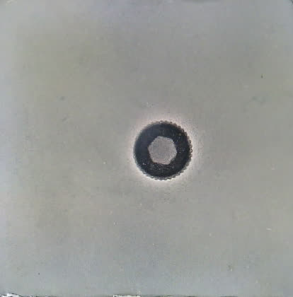
M2 hex socket head Recessed drive inside a raised rimEvery panel is GlowTact output. Relief is recovered from pressure-induced darkening in one tactile frame and is not validated against measured heights, so each surface should be read as spatial structure rather than exact geometry. The small frame on each card is the tactile image the reconstruction came from. The 9DTact figures are qualitative context: implementations and object sets differ, and no controlled quantitative comparison is claimed.
DAT / 03 One scalar image cannot give you direction
It reads the sideways pull.
A dense tangential field recovered from the tactile image alone — no markers printed in the gel, nothing tracked but the speckle already in it. Dense Farnebäck flow on a 26 px grid, gated by texture confidence and neighbour coherence, yields a usable field over 97.8 % of the gel (72.0 % under plain CLAHE), with a forward–backward consistency of 0.037 px median.
Arrow direction and colour give the local displacement; the red outline is the contact region. The strip along the bottom reports four readouts per frame: slide (mean tangential shift, px), twist (rotation ×10³), spread (push-out ×10³, the signature of a normal press) and slip (the residual after one affine fit; it rises when part of the patch breaks away). The backdrop is denoised and faded for legibility; the field is computed on the untouched frame.
One parameter set, five objects
| Measure | Value |
|---|---|
| Usable field, LCN + CLAHE | 97.8 % |
| Usable field, CLAHE alone | 72.0 % |
| Forward–backward consistency | 0.037 px median, 0.16 px at p90 |
| Flow score, self-supervised | 74 / 100 |
| Full field, one core, 0.23 MP | 13 fps |
| Global scalar alone | about 60 fps |
| Peak contact, coin to fingertip | 5 % to 32 % |
Not part of the paper: later work, shown here because it bears on the same question. Every figure above is self-supervised and taken from one reference press rather than averaged over the five clips, and there is no measured displacement to score against, so they indicate reliability, not accuracy. Phase correlation, which scores higher on internal consistency, was not adopted: it reports 1.5 to 2 times the peak displacement. These are optical shear estimates in pixels, not calibrated shear forces.
DAT / 04 Darkening is qualitative; you cannot get newtons
Darkness carries the load.
Across four everyday objects, a learned regressor reads normal force from a GlowTact frame to 0.106 N mean absolute error, against 0.145 N for GelSight Mini — identical architecture, identical protocol, held-out contact locations.
Controlled-probe validation, Table I(a). Lower is better. The third bin is the one where GlowTact loses: above 2 N its error is 0.209 N against GelSight Mini’s 0.185 N.
Everyday objects, held-out locations
| Object | GlowTact | GelSight Mini |
|---|---|---|
| Balloon | 0.087 | 0.134 |
| Light bulb | 0.093 | 0.151 |
| Pipe | 0.127 | 0.142 |
| Rope | 0.117 | 0.153 |
| Macro average | 0.106 | 0.145 |
Identical ResNet-18 regressors, ImageNet-pretrained, trained independently per sensor on 14716 frames — 13116 from ten probe geometries and 1600 from the four objects. Ninety per cent of spatial locations train, ten validate, with every depth from one indentation kept on the same side of the split so no loading trajectory leaks across it.
Force is estimated by a learned model from the image, not measured by the camera. The gain is concentrated below 2 N, which is where the optical response is strongest and where the sensor is designed to work; above 2 N GelSight Mini is the more accurate of the two. Overall RMSE across the controlled probes is 0.276 N against 0.285 N.
DAT / 05 A nitrile membrane must be fragile
The skin takes a blade.
The sensing surface is a sheet of black nitrile glove stretched over the gel — unbonded, and replaceable in minutes. Two clips put a knife to it.
AWAITING FOOTAGE
AWAITING FOOTAGE
These are qualitative demonstrations. There is no protocol, no cycle count and no lifetime test behind them, and nothing here supports a durability margin or a claim that the sensor is more robust than any other. They exist because the paper’s conclusion claims a more durable skin, and this is where that claim has to be answered.
DOC / 01 Research record
GlowTact
Simple and Compact Vision-Based Tactile Sensing with High Sensitivity and Spatial Resolution